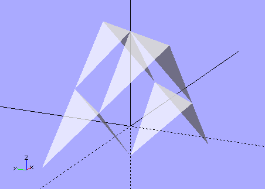
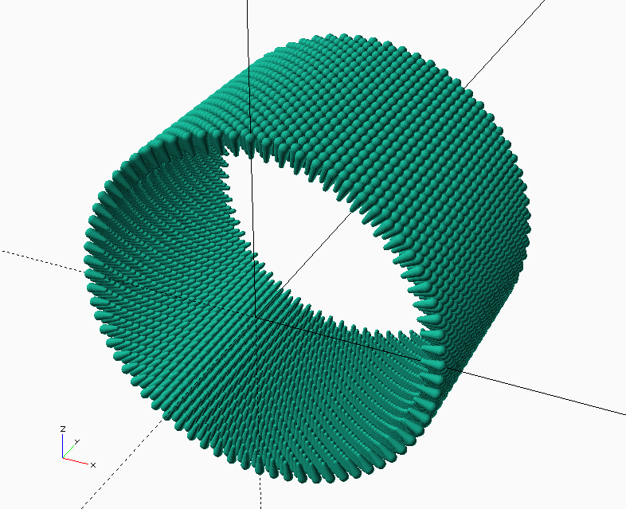

Cellular fractal structures are one of the basic design motifs of Eumirion.
Two sides of a tetrahedron approximate a Rogallo wing.
We can connect four units together to make a Sierpinski gasket.

We can repeat the process to make larger units.

A Five-meta-tetrahedron.

From the top, orthogonal view you can see that the cells tile the plane because the tetrahedra are all oriented inside virtual cubes and each x,y location has a cube/tetra covering it.

Seen edge-on with perspective the flock is almost invisible. This edge-on axis has the least resistance to airflow.
From the x=-y=z axis you get this lovely triangular symmetry.

From one point of view this structure is 2-dimensional, but it's also 3-dimensional in the sense that it occupies a volume.
There are other possibilities. This is what Bucky called "Octet Truss".

There's room to double up the triangles with a second octet truss.

You could assemble fractal units of, say, degree five, and then use those to make the octet truss structures. If the units are approximately 3 meters along an edge then the 5-tetra would be 16 * 3 = 48 meters, and a stack of seven would 48 / √2 * 7 = 237.6 meters high.
(The minimum distance between two opposite edges of a tetrahedron is the height of the cube defined by the tetrahedron's verticies.)
This kite would provide enough leftover lift to carry a payload (either depending from it or embedded in it) in the form of a cabin and/or cargo.
You can "swim" through the air using several modes of undulation. You can have the cells themselves be flexible and capable of changing their dimensions, you can have two or more stiff assemblies connected to each other by flexible linkages, etc.
(Note the images above are all upside down compared to how kites are usually constructed. I think this would work but if I'm wrong then just turn the tetras upsidedown.)
Almost anything can be made into a fractal. If we start with simple tubes we can glue them together laterally to form triangular triplets, and then repeat the process a few times to get Sierpinski gaskets, which can then be tiled to make a very simple and sturdy planar structure.
If the tubes vary in radius (in other words, if they are sections of cones) they will naturally form curved surfaces.

This is just a crude conceptual graphic, meant to illustrate the idea but it's not to any particular scale. Note the similarity to a (literal) cell wall, which is formed out of two layers of moleculars. The molecules are hydrophillic on one end and hydrophobic on the other and naturally arrange themselves into first bubbles, then tubes, then sheets, (then tubes and then bubbles again) as the ratio of water to the other stuff changes.
In this case the differential between the inside of the meta-tube and the outside is thermal. The meta-tube would be sealed at both ends and the air inside allowed to heat up. The outer surface of the sub-tubes is dark while the inner surface is shiny, so therefore are the surfaces of the meta-tube. As the air in the tube heats up it expands and some of it is pushed out of the meta-tube. When the mass of the displaced air is greater than the mass of the tube it will become a hot-air balloon and float. This is Bucky's Cloud 9 idea.
The units in these structures are not resting on the ones below them. The cells are floating in addition to the entire structure. You're basically building larger hot-air balloons out of smaller ones.
The simplest Tensegrity structure is a three-strut triangular prism. (The tethers connecting the top and bottom triangular sails are not shown in this image.)
Top view, orthogonal

Each cell consists of:
The construction would be something like:
It's difficult to accurately imagine the stiffness and lightness of these structures without building and handling physical models.
It can be tiled to make large kite "membranes":

The tricky bit seems to me to be the connection between kite cells.
Side view, orthogonal

Top view, orthogonal

And, again, if the "top" and "bottom" sails are different sizes the resulting membranes will be curved.
Connect the corners of the rectangles with edges defining equilateral triangles and you have an icosahedron.